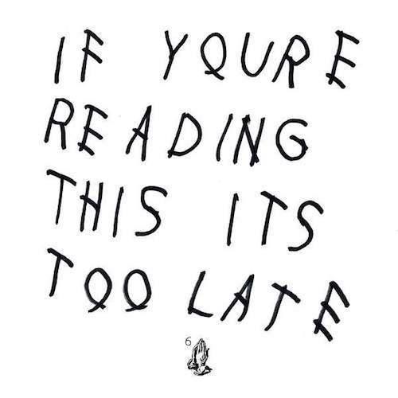

Drake is the best out there right now and I’ll go to bat for that statement. His influence on the current playing field is undeniable and unmatched, and while rappers like Kendrick Lamar may possess unmatched technical prowess and have stellar releases, no one in hip hop has Drake’s stopping power. A Drake co-sign can turn nobodies into stars (ILOVEMAKONNEN, Dej Loaf) or be the catalyst for cross-over (2 Chainz, A$AP Rocky, The Weeknd). So whether Drake’s new release is a ‘surprise album’ or a mixtape release preceded by calculated hints, the hip hop community suffered a collective heart attack when IYRTITL dropped.
Any speculation that IYRTITL is merely a ruse to eschew his Cash Money ties or classification as throwaway tracks from his upcoming release does nothing but magnify how impressive the quality of this project is. Aurally, Drake has taken the unique sound crafted by 40 and 1da in past releases and made it more muddled and darker where 2013’s Nothing Was the Same was crisp. Songs like "Energy" sound—as Drake described himself—"evil" and where he once sounded triumphant, he is jaded and vicious. Drake finds success through delivery rather than lyrics more so than ever in IFYRITL, and besides his usual phenomenal ability to melodize almost anything, he has more punch yet it seems almost nonchalant.
Songs like “Know Yourself” and “10 Bands” could easily hold up to any other fan-favorites and “Legend”—while no competition to “Over My Dead Body”—is arguably his next best album-opener. “Used To” is even better than its appearance on Sorry For the Wait 2 without Wayne’s autotune plus a biting second Drake verse, and “Preach” has an outrageously stupid yet effective hook that hasn’t left me since I first heard it. However, the album begins to lose some luster with some of the last few tracks. “You & 6” is a touching song, but comes off as boring and ending almost all of his rhymes with ‘mama’ doesn’t do much but irritate. Additionally, “6PM in New York” is one Drake’s weakest straight-bars songs and I prefer to end a listen with the silky “Jungle”.
If IYRTITL was meant to hold fans over until Views From the 6 then it exceeded in all regards. It can be hold its ground against Drake’s best releases and surpassed all of Drake’s other mixtapes. IYRTITL is indicative of Drake’s growth—a great example of him "rapping like the throne should be the three of y’all."
Artist: Drake
Album: If You’re Reading This It’s Too Late
Score: 4.0
Label: YMCMB
Release: 2015/2/12